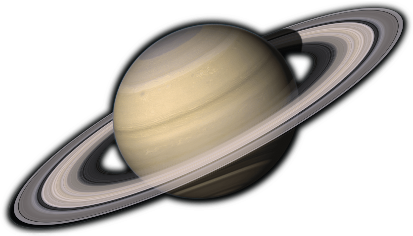

SATURN - The Ring Master
SATURN - The Ring Master


Adorned with thousands of beautiful ringlets, Saturn is unique among the planets. All four gas giant planets have rings -- made of chunks of ice and rock -- but none are as spectacular or as complicated as Saturn's. Like the other gas giants, Saturn is mostly a massive ball of hydrogen and helium.
| Age |
: |
4.503 billion years |
| Mass |
: |
5.6846x1026 kg |
| Diameter |
: |
120,660 km |
| Distance from Sun |
: |
1.4 billion kilometers |
| Temperature |
: |
-140°C |
10 Need-to-Know Things About the Saturn
- If the sun were as tall as a typical front door and Saturn would be about as big as a basketball.
- Saturn is the sixth planet from the sun at a distance of about 1.4 billion km (886 million miles) or 9.5 AU.
- One day on Saturn takes 10.7 hours (the time it takes for Saturn to rotate or spin once). Saturn makes a complete orbit around the sun (a year in Saturnian time) in 29 Earth years.
- Saturn is a gas-giant planet and does not have a solid surface.
- Saturn's atmosphere is made up mostly of hydrogen (H2) and helium (He).
- Saturn has 53 known moons with an additional 9 moons awaiting confirmation of their discovery.
- Saturn has the most spectacular ring system of all our solar system's planets. It is made up of seven rings with several gaps and divisions between them.
- Five missions have been sent to Saturn. Since 2004, Cassini has been exploring Saturn, its moons and rings.
- Saturn cannot support life as we know it. However, some of Saturn's moons have conditions that might support life.
- When Galileo Galilei looked at Saturn through a telescope in the 1600s, he noticed strange objects on each side of the planet and drew in his notes a triple-bodied planet system and then later a planet with arms or handles. The handles turned out to be the rings of Saturn.